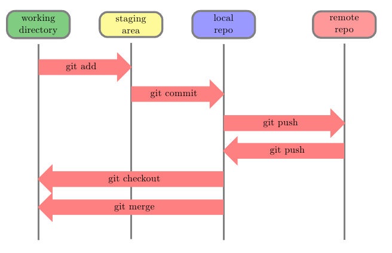

How to Create a Personal Web Page Using GitHub
You'll Need to:
- Create a GitHub account if you don't have one already.
- Download and install Visual Studio Code (VSCode).
- Download and install Git Bash
It would also be beneficial to have a basic understanding of how the Git workflow operates. In the upcoming image, you'll find a graphical illustration that will provide a visual representation of this concept.

GIT Workflow by tex.stackexchange.com
For a more comprehensive grasp of this workflow, I recommend proceeding to the next video. Within the initial three minutes, you'll gain a clearer insight into the sequence of steps, serving as a valuable precursor before delving into the process of creating a repository on GitHub. Video courtesy of Georga Tech.
To create your own personal web page on GitHub, follow these steps:
On GitHub:
- Log in to your GitHub account and create a new repository.Give it a name.
In Git Bash:
- In Git Bash, open the command line and create a folder for your repository using the command mkdir "repository_name". Remember to note down the path or location of this folder; you'll need it later.
- Inside the folder, create an HTML file with the command touch "file_name.html"
In VSCode:
- Open VSCode and navigate to the folder of the repository you created in the previous steps.
- In the HTML file, write the HTML code to structure your first web page and its content.
- Save your work by clicking "Save" or using the shortcut Ctrl+S.
Back in Git Bash:
- Return to your Git Bash command line, ensuring that you are inside the folder of your repository by using the pwd command. Then, proceed with the following commands:
- git init
- git add "file_name.html"
- git commit -m "Description of your first file."
- Push your repository to GitHub with the following commands:
- git branch -M main
- git remote add origin (add the https of your repository on GitHub)
- git push -u origin main
On GitHub:
- Create a new GitHub repository and upload your index.html file.
- Go to your repository's settings on GitHub and ensure that the branch is set to "main." Click save.
- Wait for 3-5 minutes for GitHub to deploy the information.
- Then click on the "Visit Page" link in the settings of your repository, and there you have it!
Now, your personal web page is live on GitHub. Enjoy!
If you're finding it challenging to follow the steps outlined above, I encourage you to take a look at my video tutorial.